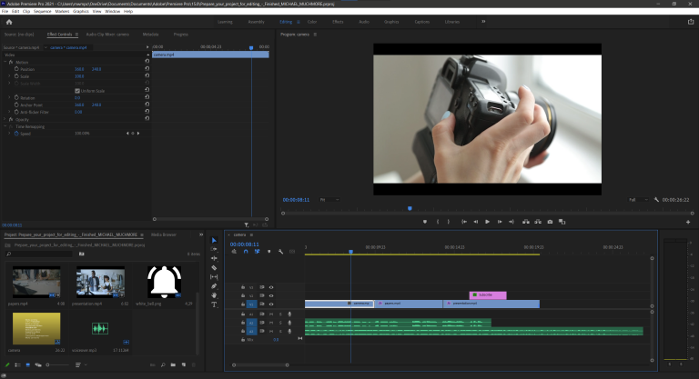
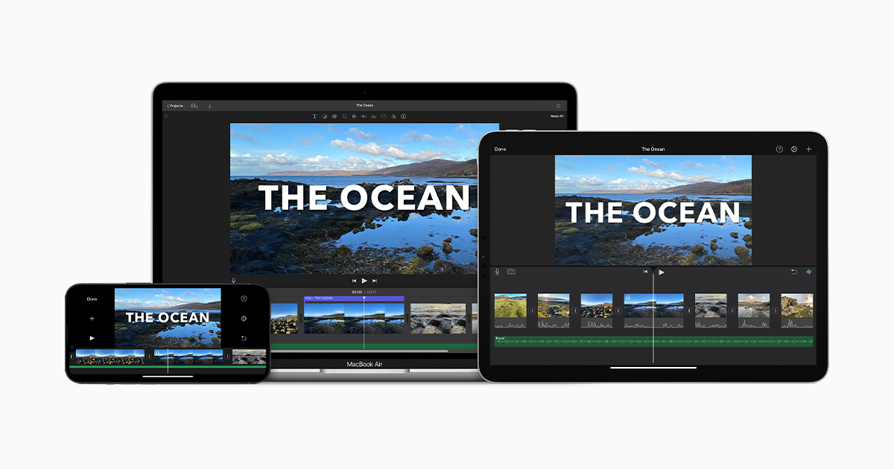
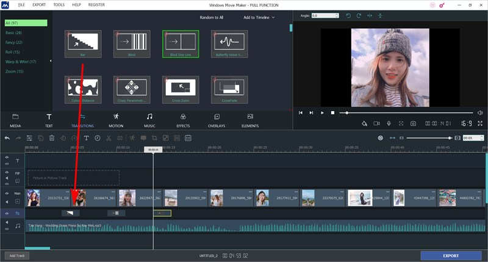
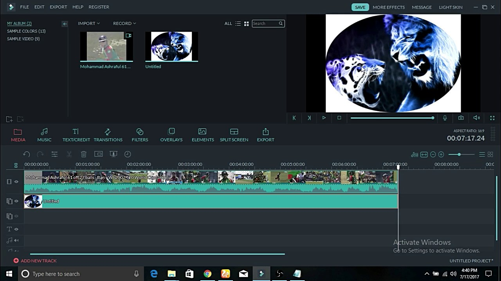
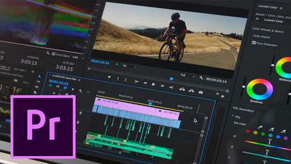

Macam macam aplikasi editing

Program video semakin dinikmati. Dengan hadirnya YouTube dan Instagram, hampir semua orang mencoba untuk membuat konten-konten dengan basis video.
hanya peralatan yang lengkap, membuat video yang bagus juga memerlukan selera dalam meng-edit video. Ibarat teka-teki atau puzzle, kamu harus pintar dalam menggabung-gabungkan gambar yang kamu miliki..
(Sumber : https://www.idntimes.com/tech/trend/abraham-herdyanto/kumpulan-software-video-editing-terbaik-dan-termudah-untuk-pemula)
1. Apple Movie

Bagi mereka yang memiliki Mac, beruntunglah kalian karena Apple menyediakan iMovie secara cuma cuma
iMovie sangatlah standar, sederhana namun berguna. Software ini memiliki fitur green-screen, integrasi dengan platform audio dan media sosial
2. Windows Movie Makers

windows movie maker aplikasi editing Standar dari Microsoft
Movie Maker memiliki kualitas yang sangat standar. Ia dapat membuat video dengan format AVI, MPEG, WMV dan beberapa lainnya.
3.Filmora

Wondershare Filmora adalah software khusus yang dapat anda gunakan untuk mengedit atau membuat sebuah video keren dengan cara yang sederhana
Selain mengedit video, dengan menggunakan aplikasi ini anda juga dapat membuat video dari kumpulan video, foto atau gambar
filmora memiliki kualitas yang sangat lumayan untuk editor. Ia dapat membuat video dengan format AVI, MPEG, WMV dan beberapa lainnya.
4.Adobe Premiere Pro

Adobe Premiere Pro adalah sebuah program penyunting video berbasis non-linier dari Adobe Systems.
Adobe Premiere Pro merupakan video editor yang sangat populer di kalangan profesional. Tool ini digunakan oleh pembuat film, youtuber, TV editor, dan videografer.
Dalam Adobe Premiere Pro juga ada beberapa effects seperti lumetri yang berguna mengatur shadow, highlight, dan lighting selain itu juga ada curva untuk menajamkan gambar..